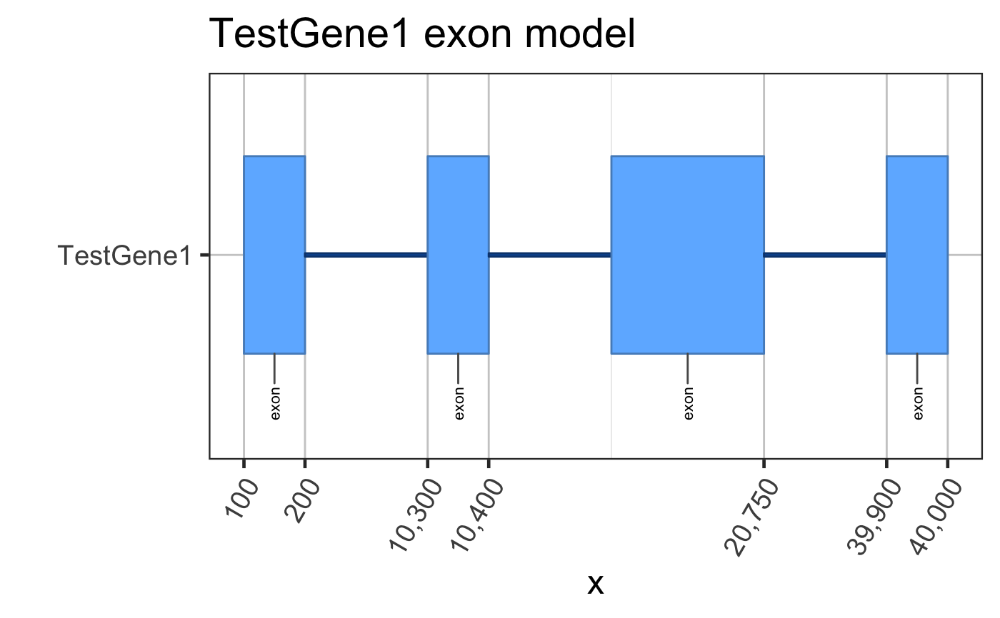
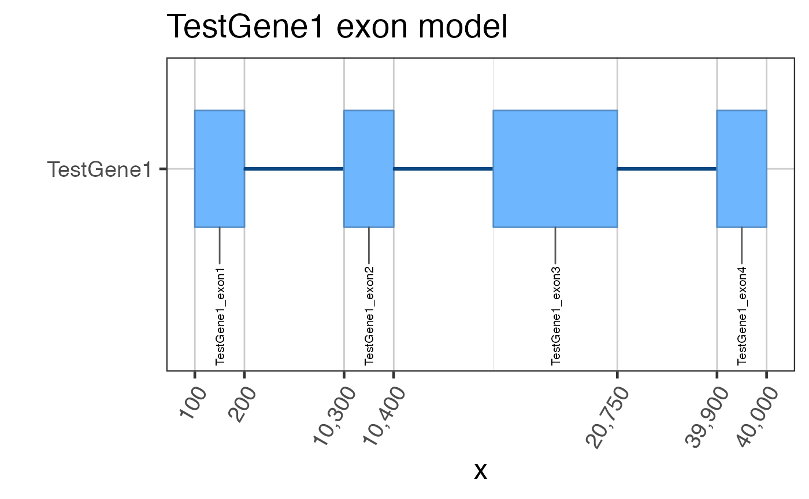
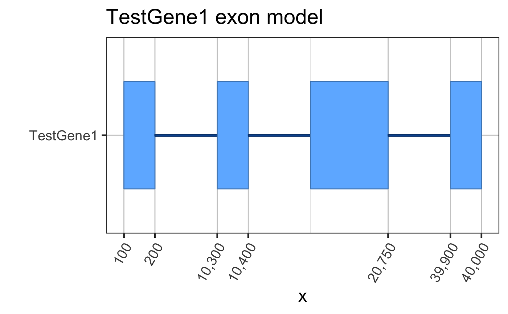

Gene GRangesList to ggplot2 grob
gene2gg( gene = NULL, tx = NULL, flatExonsByGene = NULL, flatExonsByTx = NULL, geneColor = "dodgerblue", labelExons = TRUE, exonLabelAngle = 90, exonLabelSize = 8, geneSymbolColname = "gene_name", newValues = list(feature_type = "gap", subclass = "gap", gene_nameExon = "gap"), gene_order = c("first", "last"), return_type = c("grob", "df"), ref2c = NULL, hjust = -0.2, vjust = 0.5, direction = c("both", "x", "y"), compressGaps = TRUE, tx2geneDF = NULL, label_coords = NULL, verbose = FALSE, ... )
| gene | character string of the gene to plot, compared
with |
|---|---|
| tx | character vector of the transcripts to plot, useful
when specifying specific transcripts. Values are matched with
|
| flatExonsByGene, flatExonsByTx | GRangesList objects, named
by |
| geneColor | character color used as the base color for exons, where the color is varied for each feature type or subclass. |
| labelExons | logical indicating whether to print text
labels beneath each exon, using the values in colname
|
| exonLabelAngle | numeric angle in degrees (0 to 360)
indicating how to rotate exon labels, where |
| exonLabelSize | numeric value or |
| newValues | argument passed to |
| gene_order | character value indicating whether the
flattened gene model should be plotted |
| return_type | character value indicating whether to return
the ggplot graphic object |
| ref2c | list output from |
| hjust, vjust | numeric value to position exon labels
passed to |
| direction | argument passed to |
| compressGaps | logical indicating whether to compress gaps
between exons. When |
| tx2geneDF | data.frame or NULL, optionally used to help
identify matching transcripts for the requested |
| label_coords | numeric vector length 2, optional range of
genomic coordinates to restrict labels, so labels are not
arranged by |
| verbose | logical indicating whether to print verbose output. |
| ... | additional arguments are passed to relevant functions
as needed, including |
This function is intended to help plot gene and transcript exon
models, and is a lightweight wrapper around grl2df().
It takes flatExonsByGene which is the output from
flattenExonsBy(), and essentially plots the end result
for review.
Alternatively, when return_type="df", the output is
the data.frame used to produce the ggplot, which allows
for more customization.
Other jam plot functions:
bgaPlotly3d(),
factor2label(),
grl2df(),
jitter_norm(),
plotSashimi(),
prepareSashimi(),
stackJunctions()
Other jam ggplot2 functions:
geom_diagonal_wide_arc(),
plotSashimi(),
splicejam-extensions,
to_basic.GeomShape()
Other splicejam core functions:
exoncov2polygon(),
grl2df(),
make_ref2compressed(),
plotSashimi(),
prepareSashimi()
## Assume we start with flattened gene exons data(test_exon_wide_gr); test_flatExonsByGene <- GenomicRanges::split(test_exon_wide_gr, GenomicRanges::values(test_exon_wide_gr)[,"gene_name"]); # The most basic plot of exons gene2gg(gene="TestGene1", flatExonsByGene=test_flatExonsByGene);#> Warning: package ‘ggplot2’ was built under R version 3.6.2#> Warning: package ‘ggforce’ was built under R version 3.6.2#> Warning: failed to set names on the unlisted CompressedRleList object#> Warning: package ‘data.table’ was built under R version 3.6.2# You can be fancy and number the exons test_flatExonsByGene <- assignGRLexonNames(test_flatExonsByGene, geneSymbolColname="gene_name"); gene2gg(gene="TestGene1", flatExonsByGene=test_flatExonsByGene);#> Warning: failed to set names on the unlisted CompressedRleList object# Or the exon labels can be hidden gene2gg(gene="TestGene1", flatExonsByGene=test_flatExonsByGene, labelExons=FALSE)#> Warning: failed to set names on the unlisted CompressedRleList objectif (1 == 2) { ## Do not run automated examples until sample data is available ggGria1 <- gene2gg("Gria1", flatExonsByGene=flatExonsByGeneCds); ## if transcript exons are available ggGria1 <- gene2gg("Gria1", flatExonsByGene=flatExonsByGene, flatExonsByTx=flatExonsByTx); }